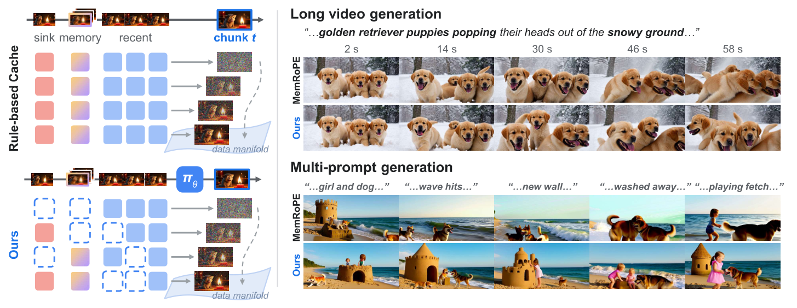
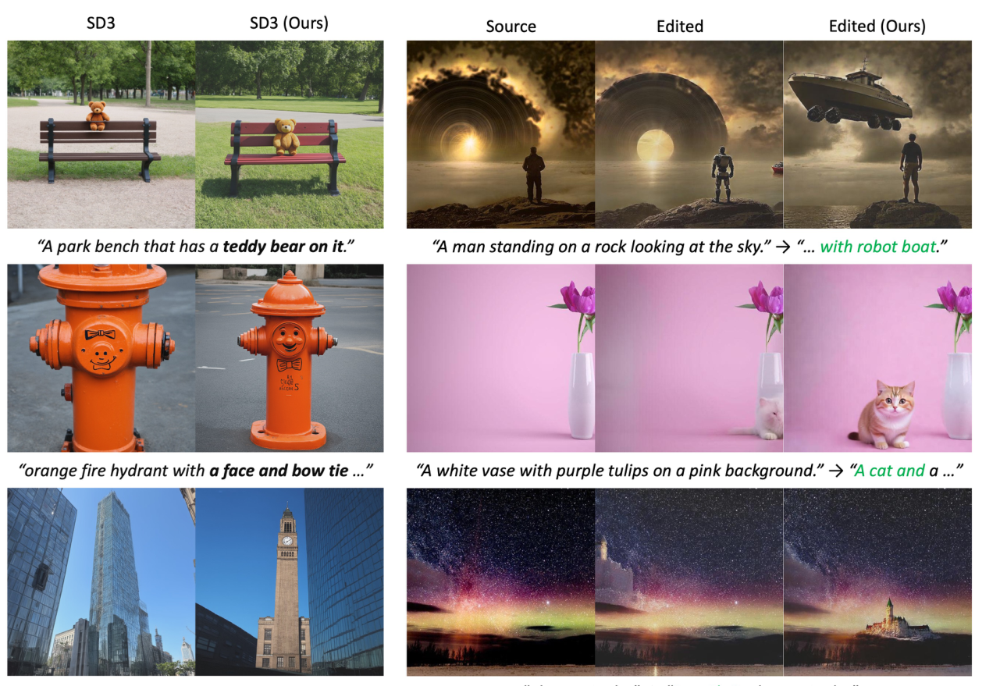
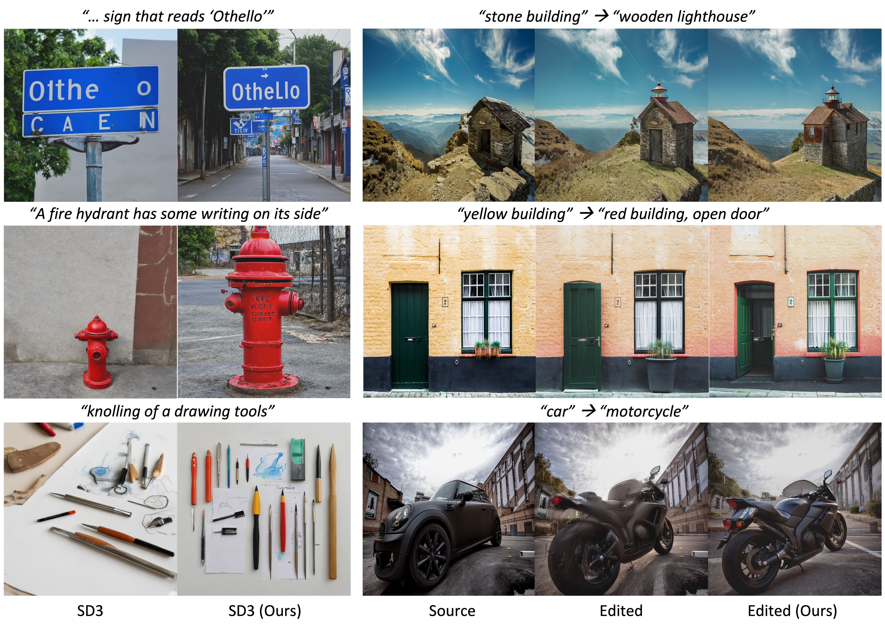
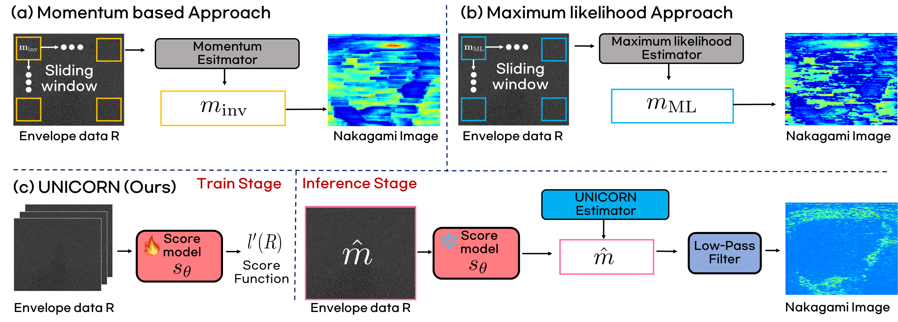
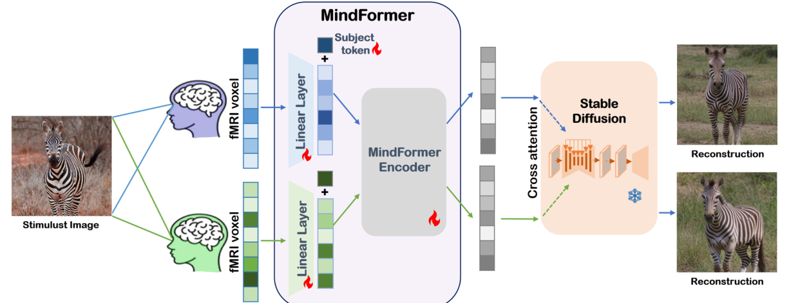

About Me
I am a 4th-year PhD student at KAIST AI in the
BISPL Lab ,
advised by Prof.
Jong Chul Ye .
My research focuses on diffusion reinforcement learning for diffusion models.
I am currently working on autoregressive video diffusion , with a focus on
long video generation and controllability .
Feel free to reach out if you would like to connect or discuss research!
News
Jul 2026
AGSM was accepted to ICML 2026 as a Spotlight (top 2.2%).
Jul 2026
Opened this blog!
Show all news
Experience
Nov 2025 - Jan 2026
Research Intern, Disney Research Zurich
Worked on the diffusion team, advised by Vinicius C. Azevedo, contributing to diffusion model training and preprocessing tools.
Research

Policy Forcing: Learning KV Cache Masking Policy for AR Video Generation
Jaa-Yeon Lee* , Jong Chul Ye.
Under Review

Jaa-Yeon Lee* , Yeobin Hong*, Taesung Kwon, Jong Chul Ye.
ICML 2026 Spotlight (top 2.2%)
Project
Code

Jaa-Yeon Lee* , Byunghee Cha*, Jeongsol Kim, Jong Chul Ye.
NeurIPS 2025
Project
Code

Kwanyoung Kim*, Jaa-Yeon Lee* , Youngjun Ko, GunWoo Lee, Jong Chul Ye.
Under Revision
More Less 6

Inhwa Han, Changsun Lee, Jaayeon Lee , Jong Chul Ye.
arXiv, 2024
Wonjin Kim, Jaayeon Lee , Jang-Hwan Choi.
Medical Physics 2024
Paper
Jaa-Yeon Lee , Sung-Hong Park.
ISMRM 2023
Paper
Jaa-Yeon Lee , Min-Ah Yoon, Chang-Gyu Chee, Jae-Hun Cho, Jin-Hwan Park, Sung-Hong Park.
MLMIR 2022, MICCAI Workshop
Paper
Jaa-Yeon Lee , Wonjin Kim, Yebin Lee, Ji-Yeon Lee, Eunji Ko, Jang-Hwan Choi.
IEEE Access 2022
Paper
Wonjin Kim, Jaayeon Lee , Mihyun Kang, Jin Sung Kim, Jang-Hwan Choi.
PLOS ONE 2022
Paper
Education
Sep 2023 - Present
PhD, Artificial Intelligence, KAIST
BISPL Lab , advised by Prof. Jong Chul Ye.
Sep 2021 - Aug 2023
MS, Bio and Brain Engineering, KAIST
MRI Lab , advised by Prof. Sung-Hong Park.
Mar 2017 - Aug 2021
BS, Mechanical and Biomedical Engineering, Ewha Womans University
Dean's List, five semesters. Research intern in the Medical AI & CV Lab , advised by Prof. Jang-Hwan Choi.